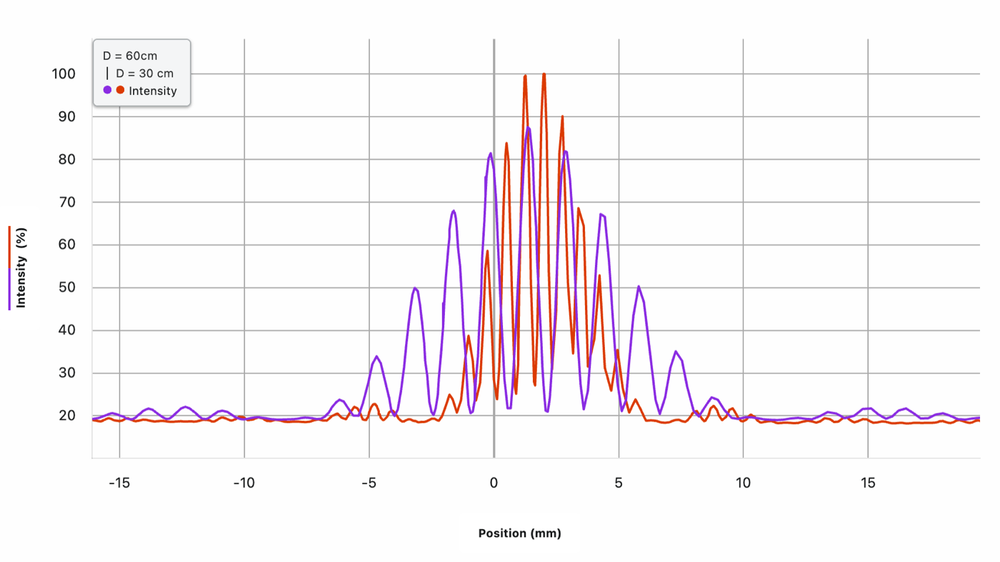
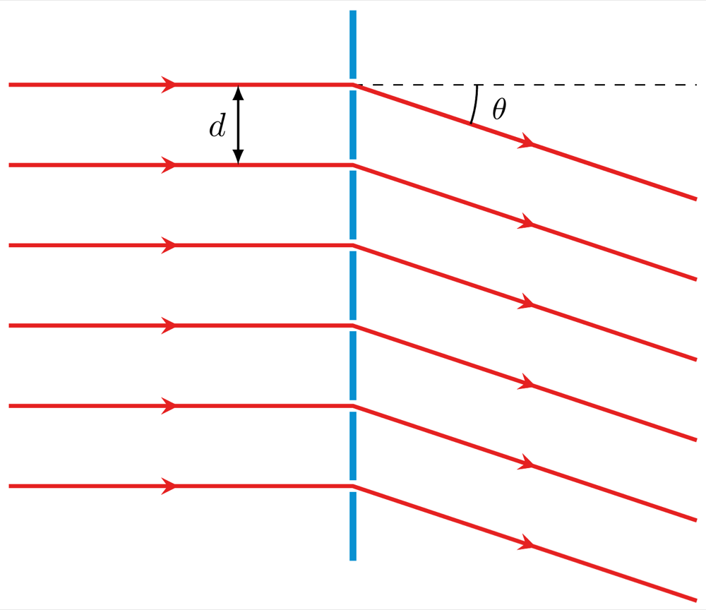
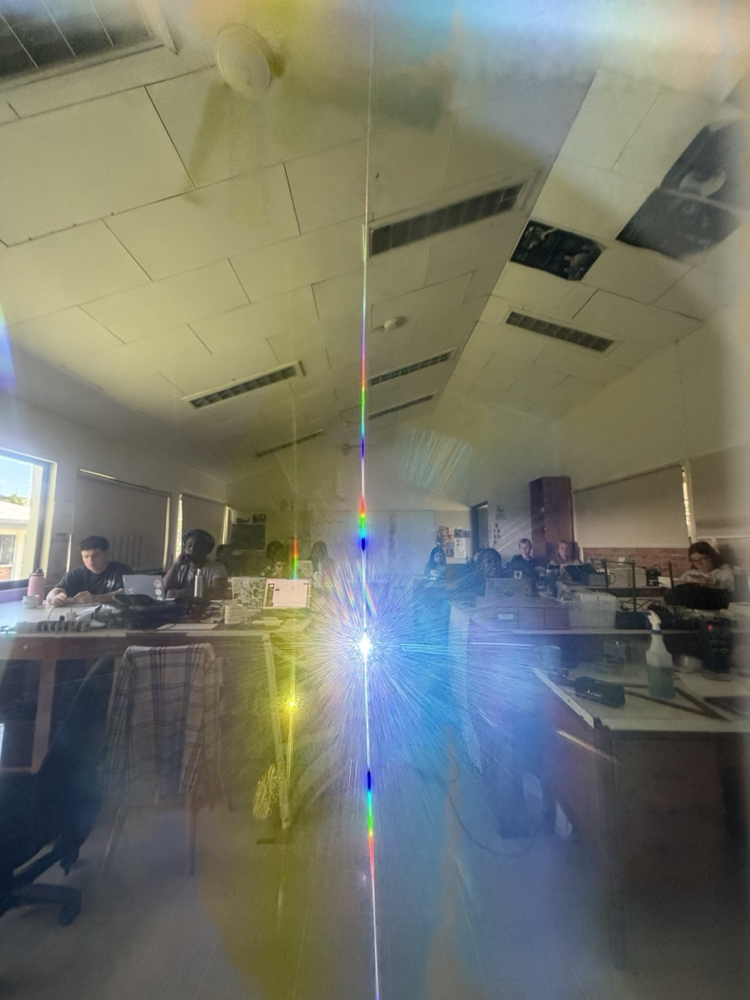
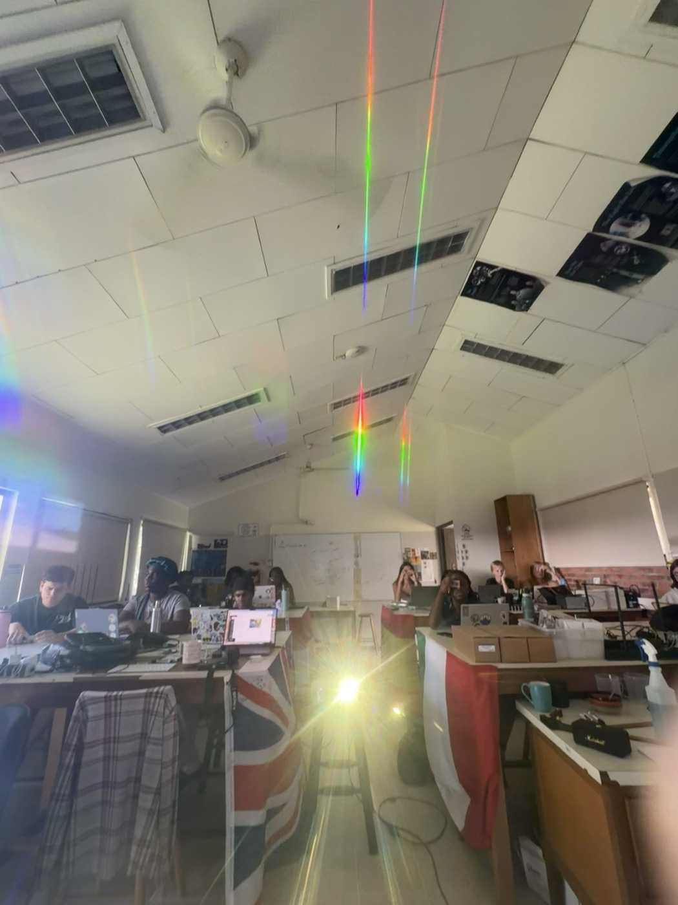
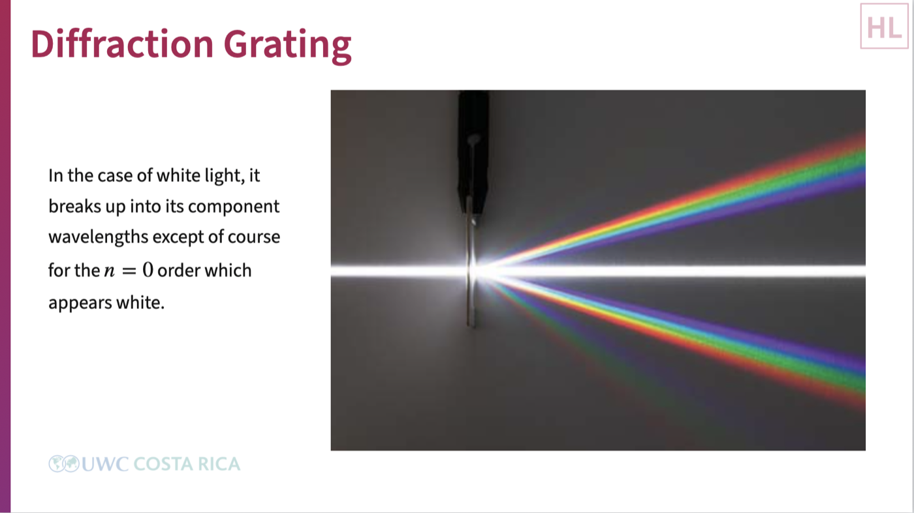

A dual class: closing the loop Lesson 10 deliberately left open, and then swapping two slits for hundreds to see what a diffraction grating actually does with them.
Lesson 10 changed slit width \(b\) and slit separation \(d\) and left one variable alone on purpose: the distance from the slits to the screen, \(D\). This class picks that up first, with the same double-slit apparatus, only moving the screen this time. Once that question is answered, the second half of the class swaps the double slit for a diffraction grating, hundreds of slits ruled into the same small space, and looks at what changes when two slits becomes many.
Same slit, same laser, two screen distances, \(D=30\) cm and \(D=60\) cm, recorded live with Graphical Analysis Pro exactly as before.

Doubling the screen distance roughly doubled everything on the wall at once: the spacing between the fine interference fringes and the width of the single-slit envelope they sit inside both stretched out by close to the same factor. Nothing about the pattern's shape changed, only its scale.
This is a genuinely different role from the last lesson's two variables. Changing \(b\) reshaped the envelope without touching the fringe spacing. Changing \(d\) reshaped the fringe spacing without touching the envelope. Changing \(D\) reshapes neither, it leaves the pattern's actual shape alone and just magnifies the whole thing, envelope and fringes together, by the same factor. \(D\) is the distance the light has to travel to turn a given angle \(\theta\) into an actual position \(y\) on the wall, so stretching that travel distance stretches every position on the pattern in exactly the same proportion, no matter which feature of the pattern you're looking at.
Look at the baseline of the graph above instead of the peaks: both traces sit around 19–20%, not at zero, and the peak heights between the two distances are close, not dramatically different the way peak heights were when \(b\) changed in Lesson 9. That's worth stopping on, because Lesson 8's own closing argument was that intensity should fall off with distance the way it does for any spreading source, roughly as \(1/D^2\).
Three lessons have each nailed down one piece: Lesson 10 found the geometric path difference between the two slits, \(d\sin\theta\), and the condition for a bright fringe, that difference landing on a whole number of wavelengths. This lesson found that \(D\) converts an angle into an actual distance on the wall, \(y\), through the same small-angle step used everywhere else in this unit, \(\sin\theta \approx \tan\theta \approx y/D\). Put together, nothing here is new physics, it's just finally writing down what the last three lessons of data have been pointing at the whole time.
\[d\sin\theta_m = m\lambda \qquad \Longrightarrow \qquad y_m \approx \frac{m\lambda D}{d}\]
Every piece of that expression is something this course measured before it was ever written as one line: \(d\) narrows or widens the fringe spacing (Lesson 10), \(D\) magnifies the whole pattern (this lesson), and \(m\) is just the fringe count already used since Lesson 8.
The second half of the class swaps the double slit for a diffraction grating, a plate ruled with hundreds of slits per millimetre instead of two. Nothing about the physics changes, every slit is still a coherent source spaced \(d\) apart from its neighbour, interfering exactly the way two slits did.

The difference is what \(d\) means here. A grating is usually labelled by how many lines are ruled into it per millimetre, \(N\), so the spacing between neighbouring slits is \(d = 1/N\). More lines per millimetre means a smaller \(d\), and the exact same bright-fringe condition, \(d\sin\theta_m = m\lambda\), says that a smaller \(d\) forces a bigger angle \(\theta\) for the same order \(m\) and the same wavelength. Denser gratings bend light through wider angles.
The class compared two real gratings, 530 lines per millimetre and 1,000 lines per millimetre, shining the same laser straight up and marking where each order landed on the ceiling.


Nearly double the line density and the diffracted orders landed noticeably farther from the central beam, exactly the direction \(d = 1/N\) predicts: the denser grating has the smaller \(d\), and the smaller \(d\) forces the larger angle.
Because the angle depends on \(\lambda\) as well as \(d\), a grating fed white light instead of a single laser colour sends every wavelength to its own angle, spreading white light into a full spectrum at each order, exactly the way a prism does, but built from interference instead of dispersion in glass.

The one exception is the very centre. At \(m=0\), \(d\sin\theta_m = m\lambda\) is satisfied at \(\theta=0\) for every wavelength at once, since the right-hand side is zero regardless of \(\lambda\). Every colour lands in exactly the same place there, which is why the central beam stays white while every other order fans each colour out to its own position.
Two experiments, and neither one needed a new equation to be handed down first. Moving the screen showed that \(D\) only rescales the picture, which is what finally justified writing \(y_m \approx m\lambda D/d\) instead of leaving it as an angle nobody could measure directly. Swapping two slits for hundreds showed the same \(d\sin\theta_m=m\lambda\) relationship still governs everything, just with a \(d\) small enough to send colours to very different angles. The equation at the end of this lesson is a record of four classes of data, not a starting point.